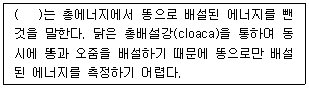
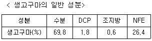
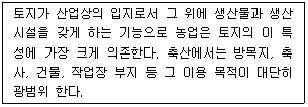
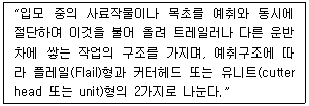
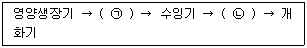

축산산업기사 (2008-09-07 기출문제)
1과목: 가축번식 육종학
1. A라는 돼지 품종의 산자수는 7.5두 이고, B라는 돼지품종의 평균 산자수는 8.5두인데 A와 B품종간의 교잡에서 나온 F1의 평균 산자수가 9.0두 라면, 이 산자수 형질에 대한 잡종강세의 강도는?
- 11.1%
- 12.5%
- 5.6%
- 6.3%
(정답률: 71%)

2. 소에 있어서 발정주기 중 출혈은 언제 나타나는가?
- 발정전기
- 발정기
- 발정후기
- 발정휴지기
(정답률: 74%)
3. 가축 정자의 운동성을 가장 정상적으로 유지하는 온도는?
- 39 ~ 40℃
- 37 ~ 38℃
- 34 ~ 35℃
- 32 ~ 33℃
(정답률: 72%)
4. 소의 경우 태아가 만출된 후 후산이 배출될 때까지의 정상적인 시간은?
- 3~8시간
- 8~12시간
- 12~24시간
- 24~36시간
(정답률: 72%)
5. 분만 과정에서 제1파수(first rupture of bag)가 일어나는 시기는?
- 개구기
- 태아 만출기
- 후산 만출기
- 일정하지 않음
(정답률: 72%)
6. 성장호르몬(GH), 갑상선자극호르몬(TSH), 부신피질자극호르몬(ACTH), 난포자극호르몬(FSH) 등의 호르몬이 분비되는 곳은?
- 시상하부
- 뇌하수체 전엽
- 뇌하수체 중엽
- 뇌하수체 후엽
(정답률: 70%)
7. 발정주기 기간 중 난소(卵巢)에서 일어나는 일련의 생리적 변화를 순서대로 가장 잘 설명한 것은
- 난포발육 → 성숙 → 배란 → 황체형성 → 퇴행
- 난포발육 → 배란 → 퇴행 → 황체퇴행 → 형성
- 황체형성 → 퇴행 → 난포성숙 → 발육 → 배란
- 황체퇴행 → 형성 → 난포발육 → 성숙 → 배란
(정답률: 69%)
8. 종모돈 선발시 선발 지수(selection index)를 추정하는데 불필요한 것은?
- 일당증체량
- 도체품질
- 사료 요구율
- 평균 등지발 두께
(정답률: 59%)
9. 태반의 형태학적 분류와 동물의 예가 잘목 짝지어진 것은?
- 산재서 - 돼지, 말
- 궁부성 - 소, 산양
- 대상성 - 개, 고양이
- 반상성 - 면양, 밍크
(정답률: 72%)
10. 다음 중 돼지 스트레스 증후군(PSS)양성 출현율이 가장 낮은 품종은?
- 피어트레인(Pietrain)종
- 벨기에 랜드레이스(Landrace)종
- 프랑스 랜드레이스(Landrace)종
- 듀록(Duroc)종
(정답률: 72%)
11. 젖소 목장에서 교배적기를 판정하는 설명 중 잘못된 것은?
- 아침 9시 이전에 발정을 확인한 경우는 당일 오후가 수정 적기이다.
- 발정을 오전(9~12) 중에 발견한 경우는 당일 저녁 또는 다음날 새벽이 수정적기이다.
- 소의 수정적기는 발정 중기부터 발정종료 6시간 내에 해당한다.
- 발정을 오후에 발견한 경우는 다음날 오후 2시 이후가 수정적기이 이다.
(정답률: 58%)
12. 다음 중 젖소의 근치 교배시 흔히 나타나는 증상에 속하지 않는 것은?
- 관절강직
- 사산
- 후구마비
- 프리마틴
(정답률: 70%)
13. 종빈돈 선발을 위한 이유자돈의 정상유두(乳頭)는 몇 개 정도가 이상적인?
- 12개 정도
- 10개 정도
- 8개 정도
- 6개 정도
(정답률: 66%)
14. 선발강도에 대한 설명으로 틀린 것은?
- 선발차를 표현형 표준편차로 나눈 값이다.
- 가축의 증식률과 밀접한 관계를 가진다.
- 측정단위가 다른 형질간의 선발차를 비교하는데 쓰인다.
- 선발강도가 낮아지는 것이 암가축에서 보다 수가축에서 특히 현저한 경향이 있다.
(정답률: 59%)
15. 다음 세대에 가축을 생산하는데 쓰일 종축(種畜)을 고르는 것을 무엇이라고 하는가?
- 선발
- 도태
- 교배
- 증식
(정답률: 80%)
16. 암탉의 조숙성(sex-maturity)을 나타내는 방법은?
- 연속 산란일령
- 초산일령
- 산란사 편입일령
- 최고 산란율 도달일령
(정답률: 77%)
17. 한쪽 성에만 발현되는 형질을 개량할 때 또는 개량하고자 하는 형질의 유전력이 낮아 개체선발을 효과적으로 이용할 수 없을 때 가장 적합한 방법은?
- 혈통선발
- 형매검정
- 후대검정
- 가계내검정
(정답률: 64%)
18. 젖소의 분만시 혈장 내의 칼슘과 무기인의 급속한 감소로 발생하며, 허탈을 초래하는 질병은?
- 케토시스증
- 임신중독
- 질탈
- 유열
(정답률: 75%)
19. 수가축의 정자형성 및 번식장해와 관련된 설명 중 틀린 것은?
- 정액생산개시 시기는 동일 품종 내에 있어서는 체중보다 연령의 영향을 많이 많는다.
- 고온, 다습한 환경에서 정자농도가 감소하고, 기형정자수가 증가한다.
- 잠복정소 내의 정자형성은 비정상적으로 이루어진다.
- 정소발육과 정소 형성의 불충분에 의해 정자형성이 저해된다.
(정답률: 62%)
20. 다음 중 유량, 유성분 및 유성분 함량(%)과의 유전상관에 관한 기술 중 옮은 것은?
- 유량이 많으면 유지량은 줄어든다.
- 유량이 많으면 유지방율은 낮아진다.
- 유량이 많으면 유단백이 높다.
- 유지율이 높으면 유단백율은 낮다.
(정답률: 62%)
2과목: 가축사양학
21. 고기 중 불포화지방산의 함량이 많고 linoleic acid 등의 필수지방산이 많이 들어 있는 고기는?
- 쇠고기
- 양고기
- 돼지고기
- 닭고기
(정답률: 68%)
22. 다음 ( )안에 적합한 것은

- 총에너지
- 가소화에너지
- 대사에너지
- 정미에너지
(정답률: 52%)
23. 소의 비육시 각가 영양소 1㎏씩을 공급하였을 때 지방생산능력이 제일 낮은 것은?
- 가소화 전분
- 가소화 당분
- 가소화 단백질
- 가소화 조섬유
(정답률: 40%)
24. 다음 중 임신우의 경우 영양소 공급이 제일 많아야 하는 시기는?
- 임신 초기
- 임신 중기
- 임신 말기
- 모두 동일
(정답률: 65%)
25. 다음 가축에서 비타민 D2와 D3를 이용할 때 동등한 효력을 나타내지 않는 것은?
- 송아지
- 돼지
- 개
- 병아리
(정답률: 65%)
26. 근육 내 즉 근육간에 지방이 축적된 고기는?
- 상강육
- 장정육
- 사태육
- 양지육
(정답률: 75%)
27. Ca은 젖소가 부족하게 되면 유열(milk fever)이 일어나고 산란계가 부족하면 난각이 얇아져 파란이 많이 발생하게 하는 광물질로 체내 Ca 대사 작용에 관여하는 비타민과 호르몬은?
- Vitamin A와 프로락틴(prolactin)
- Vitamin D와 부갑상선호르몬(PTH)
- Vitamin E와 프로게스테론(progesterone)
- Niacin과 에스트로겐(estrogen)
(정답률: 63%)
28. 가축에 급여할 배합사료나 단미사료의 성분니 다른 사료와 비교할 때는 같은 조건에서 비교하여야 한다. 즉 사료의 성분을 일정한 수분함량으로 환산하거나 또는 건물 중의 수분함량으로 환산하여야 한다. 표와 같은 성분을 가진 생고구마를 풍건율 상태(수분함량 12%)로 조성분을 환산할 때 DCP 및 조지방은 각각 얼마인가?

- DCP = 4.6%, 조지방 = 2.0%
- DCP = 4.8%, 조지방 = 1.5%
- DCP = 5.2%, 조지방 = 1.7%
- DCP = 5.6%, 조지방 = 1.2%
(정답률: 53%)
29. 도체율에 대한 올바르게 설명한 것은?
- 가축의 생체중에 대한 정육의 생산비율
- 가축의 도체중에 대한 정육의 생산비율
- 가축의 생체중에 대한 도체중의 생산비율
- 가축의 도체중에 대한 지방량의 생산비율
(정답률: 65%)
30. 셀레늄(Se)이 부족하게 되면 백근병(white muscle disease)과 후산정체가 발생되는데 다음 사료 중 어떤 비타민의 함량과 매우 밀접한 관계가 있는가?
- 비타민 A
- 비타민 B
- 비타민 D
- 비타민 E
(정답률: 51%)
31. 닭의 소장에서 분비되지 않는 효소는?
- 락타아제(lactase)
- 아밀라아제(amylase)
- 리파아제(lipase)
- 펩티다아제(peptidase)
(정답률: 45%)
32. 황색 옥수수에 함유된 성분으로 난황, 다리, 부리, 피부 등을 황색으로 변하게 하는 물질은?
- 트립토판
- 플라보노이드
- 라이신
- 크산토필
(정답률: 68%)
33. 곡류사료의 영양적 특성에 대한 설명으로 틀린 것은?
- 에너지 함량이 높고 조섬유 함량이 낮다.
- 단백질 함량이 높고 아미노산 조성도 좋다.
- 영양소 소화율이 높고 기호성이 좋다.
- 일반적으로 Ca와 P의 함량이 적다.
(정답률: 63%)
34. 성장기 전반에 영양소 급여를 적정수준에서 제한하고, 상장 후기에 집중적으로 영양소를 보충하면 급속하게 성장을 회복하는 효과는 무엇인가?
- 정상성장
- 제한사양
- 보완사양
- 보상성장
(정답률: 64%)
35. 산란계의 단백질 사료에 있어서 항영양인자의 함유로 사용이 제한되는 것은?
- 면실박
- 대두박
- 어분
- 우모분
(정답률: 61%)
36. 반추가축의 요결석에 대한 설명으로 틀린 것은?
- 농후사료를 많이 급여하면 체내에 인산의 과잉을 가져와 칼슘과의 비율이 깨어져 오줌 속에 인이 많아진다.
- 조사료 부족시 제1위 기능저하와 설사로 칼슘의 흡수가 불량하여 인산과잉을 초재하고, 비타민A 부족으로 요로계 점막상피가 떨어지기 쉬우며, 이것이 인산암모늄 마그네슘의 결정화를 조장한다.
- 급수부족으로 오줌 속에 려러 성분의 농도가 높아지거나 밀사 등도 간접적인 원이이 되며, 거세우는 음경의 발육불량으로 요도가 가늘어 요석이 막힐 가능성도 있다.
- 가벼운 증세에서는 음수량 증가를 위하여 수산염을 많이 먹이거나 요석 배출 촉진을 위하여 1일 15~25g(예방 : 6~10g)의 염화나트륨을 1일 2회 나누어 5~6일간 먹인다.
(정답률: 53%)
37. 닭에 있어서 필수아미노산으로 분류되는 것은?
- proline
- serine
- alanine
- lysine
(정답률: 67%)
38. 사료중의 단백질 함량이 20%, 사료중의 산화크롬 함량이 0.4%, 분중의 단백질함량이 20% 그리고 분중의 산화크롬 함량이 1.6% 일 때 단백질 소화율은?
- 70%
- 75%
- 80%
- 85%
(정답률: 41%)
39. 난각(卵殼)을 구성하는 무기물 중 가장 많은 비율을 차지하는 것은?
- CaCo3
- Ca3(PO4)2
- 황
- 철
(정답률: 67%)
40. 섬유소를 가장 잘 이용할 수 있는 가축은?
- 돼지
- 닭
- 소
- 칠면조
(정답률: 64%)
3과목: 축산경영학
41. 자산평가액을 내용년수의 함계로 나눈 후 그 연수의 역(逆)을 곱하여 각 연도의 상각(償却)액을 계산하는 감가 방법은?
- 정액법
- 급수법
- 잔액법
- 비례법
(정답률: 55%)
42. 가족 노동력의 특징으로 가장 거리가 먼 것은?
- 소득과 관례가 되므로 항상 최선의 노력을 한다.
- 노동시간에 제한을 받지 않는다.
- 물품, 재료 등의 낭비가 발생한다.
- 노동감독이 필요치 않다.
(정답률: 65%)
43. 한계비용에 대한 내용을 바르게 설명한 것은?
- 일정량의 생산에 소요된 총비용을 생산량으로 나눈 것
- 생산량 1단위 증가분을 평균비용의 증가분으로 나눈 것
- 생산량을 1단위 더 생산할 때 추가적으로 들어가는 총비용의 추가분
- 일정량의 생산에 소요된 평균비용을 생산량으로 나눈 것
(정답률: 66%)
44. 사료효율(飼料效率)을 구하는 방법이 바르게 표시된 것은?
- 사료급여량/축산물생산량
- 축산물생산량/사료급여량
- 구입사료대/유대
- 사료급여량/사료구입량
(정답률: 62%)
45. 기업적 축산경영의 기본 목표는?
- 생산의 극대화
- 조수익의 극대화
- 이윤의 극대화
- 투입량의 극대화
(정답률: 73%)
46. 축산경영의 4대 요소로만 구성된 것은?
- 토지, 노동력, 자본력, 경영기술
- 토지, 교용력, 자본력, 경영기술
- 목초지, 자가노동, 자본재, 기술
- 목초지, 고용력, 자본재, 기술
(정답률: 75%)
47. 착유우의 구입가격이 200만원, 착유우의 내용년수가 4년, 착유우의 잔존가가 구입가의 50%일 때 정액법으로 감가상각비를 산출 할 경우에 이 착유우의 매년 상각비는?
- 15만원
- 20만원
- 25만원
- 30만원
(정답률: 67%)
48. 축산물의 정전가격(문전가격)이란?
- 축산물 시장가격에서 판매 제비용을 차감한 가격
- 시장가격 그 자체
- 축산물 소비자가격과 농가수취가격의 차액
- 축산물 시장가격에 판매 제비용을 합한 가격
(정답률: 49%)
49. 생산함수의 생산영역 설명으로 틀린 것은?
- 생산함수의 제2영역에서는 생산 투입을 중단한다.
- 생산함수의 제1영역에서는 무조건 생산투입을 증가시킨다.
- 최적생산 구역은 제3영역에서 발생하지 않는다.
- 제2영역은 평균생산이 최고인 점에서 총생산이 최고인 점 사이이다.
(정답률: 52%)
50. 한우경영과 수도작에 의한 복합경영의 장점이 아닌 것은?
- 토지의 이용증진
- 노동력의 이용증진
- 위험의 집중화
- 자금회전의 원활화
(정답률: 65%)
51. 다음은 토지의 어떠한 특징에 관한 설명인가?

- 적재력
- 가경력
- 불가동성
- 불가증성
(정답률: 64%)
52. 우리나라 축산업이 국민경제에 직접적으로 영향을 미치는 역할이 아닌 것은?
- 농가 소득원의 하나로서 농가의 자금원이다.
- 수입 대체 축산물을 생산 공급함으로써 국민경제의 외화 절약에 기여한다.
- 국민의 중요한 단백질 공급원을 생산한다.
- 사료작물의 재배등을 통하여 토지의 비효율성을 증대시킨다.
(정답률: 75%)
53. 일반적으로 가축 단위의 기준이 되는 것은?
- 말
- 소
- 양
- 돼지
(정답률: 68%)
54. 양돈경영에서 농후사료의 투입량을 2단위에서 4단위로 늘렸더니 생체중이 5단위에서 9단위로 증체하였다면, 한계생산량은 얼마인가?
- 2
- 3
- 4
- 5
(정답률: 54%)
55. 생산요소의 일부를 한 생산물 생산에서 다른 생산물의 생산물을 위해 사용함으로써 두 생산물이 모두 증가하는 생산물 결합 형태는 무엇인가?
- 경합생산물
- 보합생산물
- 보완생산물
- 결합생산물
(정답률: 47%)
56. 축산경영 분석을 위한 대차대조표의 차변(借邊)에 기재되는 항목은?
- 단기차입금
- 외상매입금
- 미수입금
- 미지불금
(정답률: 55%)
57. 자본이 적고 노동력이 풍부한 경영체에서 추해야 할 경영 형태로 적합한 것은?
- 노동조방적·자본조방적 경영
- 노동집약적·자본조방적 경영
- 노동조방적·자본집약적 경영
- 노동집약적·자본집약적 경영
(정답률: 58%)
58. 축산경영에서 노동능률의 향상과 기계화를 위하여 필요한 것이 아닌 것은?
- 토지조건의 미정비
- 노동수단의 고도화
- 작업의 능률화
- 노동력배분의 평균화
(정답률: 79%)
59. 농업은 생산의 전 과정을 분업화 할 수 없고, 한 가지 작업의 전문화가 곤란하므로 기능공이 있을 수 없으며, 작업의 적기 수행의 여부가 생산량에 커다란 영향을 끼친다. 농업 노동력의 어는 특수성을 설명한 것인가?
- 농업노동의 이동성
- 농업노동의 다양성
- 농업노동의 계절성
- 노동감독의 곤란성
(정답률: 66%)
60. 축사의 위치는 주택으로부터 좀 떨어진 건조하고 약간 높은 곳이 좋으며, 축사의 방향은 어디가 좋을까?
- 동향
- 서향
- 남향
- 북향
(정답률: 74%)
4과목: 사료작물학
61. 가장 좋은 품질 상태의 사일리지(silage) pH 범위는? (단, 사일리지 수분함량이 70% 일때)
- 3.8 ~ 4.0
- 4.8 ~ 5.0
- 5.2 ~ 5.6
- 5.8 ~ 6.0
(정답률: 63%)
62. 우리나라 초지에서 목초에 대한 지상부의 피해 해충 분류로 잘못된 것은?
- 끌통매미충
- 검정풍뎅이(유충)
- 벼룩잎벌레
- 콩진딧물
(정답률: 68%)
63. 일반적으로 다음 콩과(두과)목초 중에서 건초용으로 가장 적당한 것은?
- 크림슨 클로버
- 화이트 클로버
- 스위트 클로버
- 알팔파
(정답률: 77%)
64. 목초의 식별 능력은 재배관리상 매우 중요하다. 다음 중 화본과(벼과)목초의 식별에 쓰이지 않는 식물 부위는?
- 엽설(입혀)
- 엽병(잎자루)
- 옆초(잎집)
- 유경(어린줄기)
(정답률: 48%)
65. 건초의 조제 및 이용시 장ㆍ단점을 잘못 설명하고 있는 것은?
- 천일건초의 경우 비타민 D의 함량이 높다.
- 조제과정에서 두과목초의 영양소 손실이 적다.
- 조제에 있어서 기후의 영향을 많이 받는다.
- 송아지의 소화관 발달을 촉진시킨다.
(정답률: 70%)
66. 콩과(두과)목초의 일반적인 특성과 거리가 먼 것은?
- 뿌리는 곧은 뿌리로 되어 있다.
- 종자는 등과 배 쪽에 봉합선을 따라서 벌어지는 꼬투리 안에 있다.
- 줄기는 대체로 속이 비어 있고, 둥글며 뚜렸한 마디가 있다.
- 목초의 뿌리에는 질소고정을 할 수 있는 뿌리혹박테리아를 갖는다.
(정답률: 72%)
67. 일반적으로 북방형 목초가 가장 잘 자라는 기온은?
- 5 ~ 10℃
- 15 ~ 21℃
- 25 ~ 27℃
- 30 ~ 35℃
(정답률: 69%)
68. 원통형 탑형사일로의 직경이 2.0m이고, 높이가 5.0m인 경우 이 사일로의 용적(m3)은 약 얼마인가?
- 12.72m3
- 10.⑤m3
- 15.70m3
- 20.77m3
(정답률: 62%)
69. 사일리지 조제 시 생성되는 유기산 중 빨리 생성되는 순서로 나열했다. 다음 중 옮은 것은?
- 낙산 → 초산 → 젖산
- 낙산 → 젖산 → 초산
- 젖산 → 낙산 → 초산
- 초산 → 젖산 → 낙산
(정답률: 68%)
70. 목초 파종 후 복토의 깊이로 가장 좋은 것은?
- 종자지름의 0.1 ~ 0.5배
- 종자지름의 2 ~ 3배
- 종자지름의 5 ~ 6배
- 종자지름의 8 ~ 9배
(정답률: 77%)
71. 건초 조재시 화본과 목초의 예취 적기는?
- 수잉기부터 출수초기
- 신장초지
- 생장기
- 개화결실기
(정답률: 76%)
72. 다음에서 설명하는 기계는 무엇인가?

- 헤이컨디셔너(Hay conditioner)
- 테더(Tedder)
- 레이크(Rake)
- 포레이지 하베스터(Forage harvester)
(정답률: 61%)
73. 보리나 밀과 같이 꽃차예의 기본단위인 소수(spikelets)들이 이삭축 위에 직접 달려 있는 꽃차례(花序)는?
- 수상화서
- 총상화서
- 원추화서
- 일반화서
(정답률: 58%)
74. 수분함량이 40~60%인 저수분 사일리지의 장점이 아닌 것은?
- 일반 사일리지에 비해 젖산함량이 낮고 pH가 높다
- 건물섭취량이 고수분 사일리지보다 많다.
- 즙액유실로 인한 손실이 없다.
- 재료에 희한 압착 미흡으로 공기 배제가 잘 된다.
(정답률: 53%)
75. 알팔파의 예취의 적기는?
- 만개후
- 개화초기
- 영양생장기
- 결실기
(정답률: 75%)
76. 콩과(두과) 목초의 근류근 접종에 대한 설명 중 잘못된 것은?
- 토양접종법이 있다.
- 종자접종법이 있다.
- 접종할 때 탄산석회가 부착제로 사룡된다.
- 접종된 종자를 소독하여야 한다.
(정답률: 76%)
77. 다음은 벼과 사료작물의 생육 과정이다. 각가 ( )안에 저합한 것은?

- ㉠ 절간신장기, ㉡ 출수기
- ㉠ 출수기, ㉡ 결실기
- ㉠ 지엽기, ㉡ 절간신장기
- ㉠ 출수기, ㉡ 지엽기
(정답률: 68%)
78. 벼과(禾本科)목초는 방석형과 다발형 목초로 나눌 수 있다. 다음 중 지하경이나 포복경이 없어 다발형 목초에 속하는 것은?
- 켄터키 블루그래스(Kentucky bluegrass
- 오차드그래그(Orchard grass)
- 리드 카나리그래스(Reed canarygrass)
- 스므스 브롬그래그(Smooth bromegrass)
(정답률: 66%)
79. 옥수수 사일리지(silage)를 제조할 때 쥐기시험(grab test)의 결과 중 세절 재료로 가장 적당한 것은?
- 즙액이 손가락 사이로 나오거나 물방울이 떨어 질 때
- 쥔 손을 서서히 폇을 때 재료의 덩어리가 흐트러지지 않고 모양이 유지될 때
- 쥔 손을 서서히 폈을 때 재료의 덩어리가 흐트러지지 않으나 즉시 금이 가고 벌어질 때
- 쥔 손을 서서히 폈을 때 재료의 덩어리가 즉시 흐트러져 a양이 급히 무너질 때
(정답률: 56%)
80. 꽃이 핀 후 처음애는 암술대와 이를 둘러싸고 있는 꽃실집이 꽃에 의하여 눌려 있다가 곤충이나 고온 또는 건조등의 자극을 받아서 암술대와 꽃실집의 선단부가 기판(旂瓣)을 향하여 솟아오르는 현상은?
- 트리핑현상
- 추대현상
- 일비현상
- 카이네틴
(정답률: 56%)
잡종강세의 강도는 F1의 평균 산자수와 부모 품종의 평균 산자수의 차이를 부모 품종의 평균 산자수로 나눈 값으로 계산할 수 있다.
즉, (9.0 - ((7.5 + 8.5) / 2)) / (8.5 - 7.5) x 100 = 12.5%
따라서 정답은 "12.5%"이다.